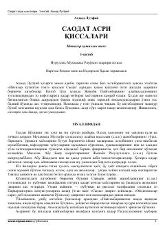

SAPayg'ambarimiz hayotini badiiy tarzda tasvirlovchi tarixiy qissa seriyasining birinchi kitobi.
Bu kitob Ahmad Lutfiyning olti jildlik 'Saodat asri qissalari' seriyasining birinchi qismi bo'lib, Payg'ambarimiz Muhammad (s.a.v.) tug'ilishidan to nabuvvatgacha bo'lgan davrni va johiliyat zamonini badiiy tarzda tasvirlaydi. Asarda Abraha lashkarining Ka'bani buzishga urinishi, Abdulmuttalib bilan muloqoti va Allohning mo''jizaviy himoyasi kabi tarixiy voqealar jonli hikoya qilinadi. Muallif aniq tarixiy voqealarni o'ziga xos badiiy uslubda aks ettirgan.